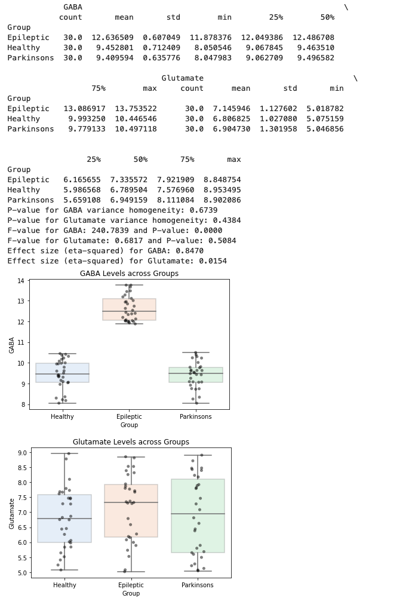
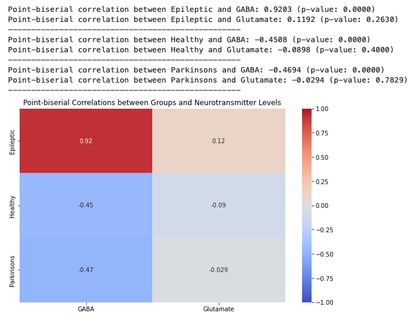
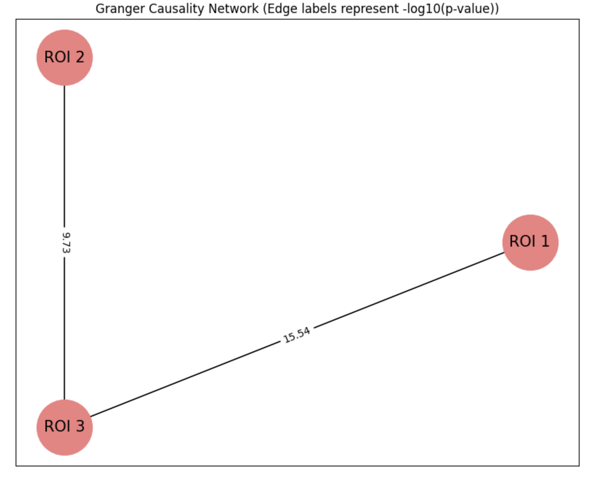
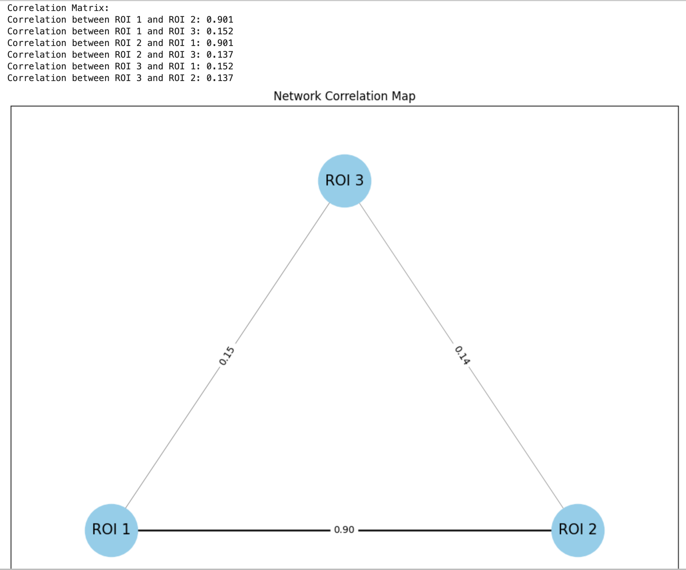

Statistics and Plotting Scripts in Python & R
Below are a few of my projects and their corresponding codes:
MR Spectroscopy Analysis of GABA and Glutamate Levels in Relation to Anti Epileptic Drugs
 Checkout the MRS, GABA and Epilepsy Data Analysis on GitHub:
View the GitHub RepositoryGranger Causality: fMRI Data Region of Interest (ROI-ROI) analysis
 Checkout the Granger Causality and Region of Interest Analysis of fMRI data:
View the GitHub Repository